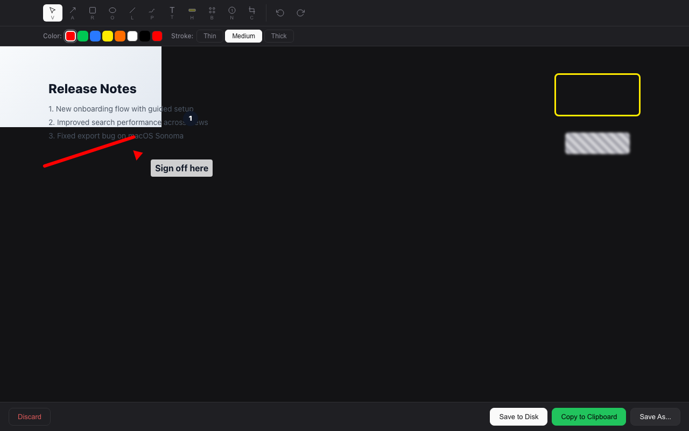
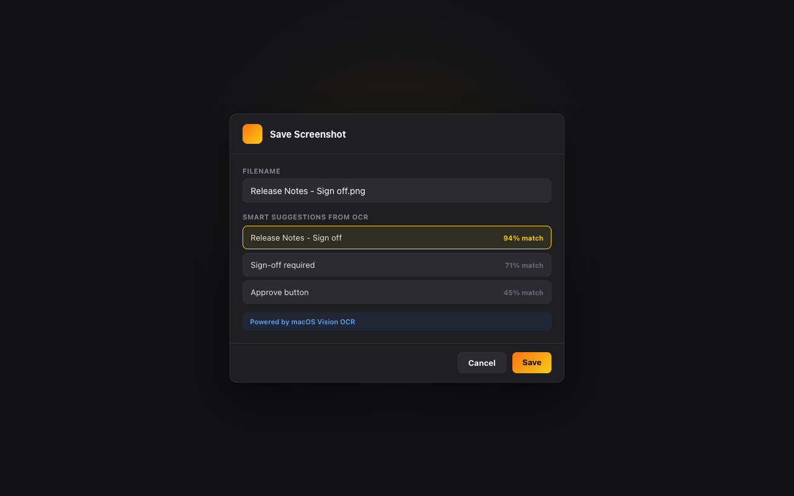
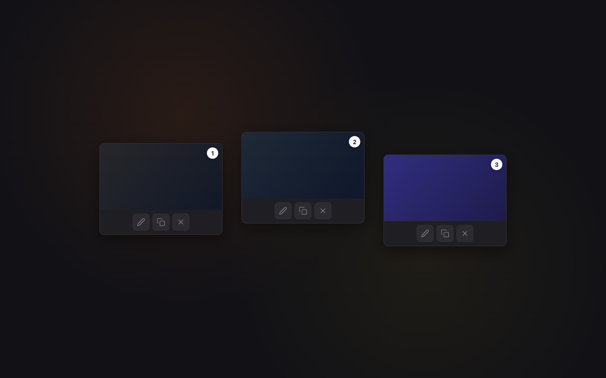
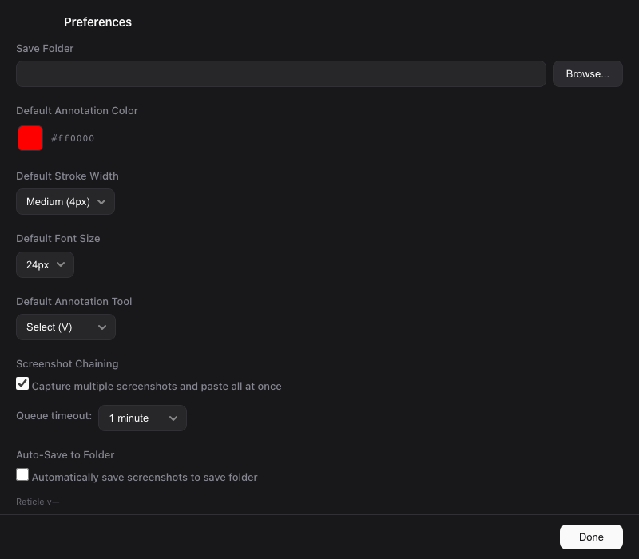

01
Capture without friction
Area, fullscreen, and window screenshots are shortcut-driven and copied to the clipboard instantly. Take the shot, paste it, move on.
Reticle replaces the default macOS screenshot flow with instant clipboard capture, fast markup, screenshot chaining, and smart OCR filenames.



Area, fullscreen, and window screenshots are shortcut-driven and copied to the clipboard instantly. Take the shot, paste it, move on.
Arrows, rectangles, ovals, lines, freehand drawing, text, highlight, blur, counters, crop, undo, and redo all live in one focused editor.
Capture multiple steps in a row, queue them automatically, cycle through edits, and paste the full set at once when the context matters.

macOS Vision OCR reads visible text and scores headings, titles, and useful UI labels so screenshots save with meaningful filenames.
Preferences cover keyboard shortcuts, default tools, colors, stroke width, font size, auto-save folders, chaining, and queue timeouts.

A free, private macOS utility designed around speed, clarity, and fewer tiny workflow papercuts.